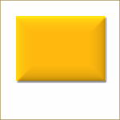

Figura 17.259. Exemplo para o filtro “Adicionar chanfro”

Imagem original, o retângulo colorido está selecionado

Filtro aplicado
This filter adds a slight bevel to an image using a bump map (see below). If there is a selection, it is bevelled, otherwise the filter has no effect.
Figura 17.260. Outro exemplo de “Adicionar chanfro”, com mapa de relevo

Imagem original

Mapa de relevo

Filtro aplicado
![[Nota]](images/note.png)
|
Nota |
|---|---|
|
If the image is in grayscale mode or indexed mode, this menu entry is disabled. |
- Espessura
-
Você pode especificar a espessura do chanfro, em pixels. A espessura máxima é 30 pixels.
- Trabalhar em uma cópia
-
Se selecionada, o filtro criará uma nova janela contendo uma cópia da imagem com o filtro aplicado. A imagem original permanece inalterada.
- Manter camada de relevo
-
When checked, you will keep the generated bumpmap as a new, not visible layer:

Layers Dialog with “Keep bump layer” enabled